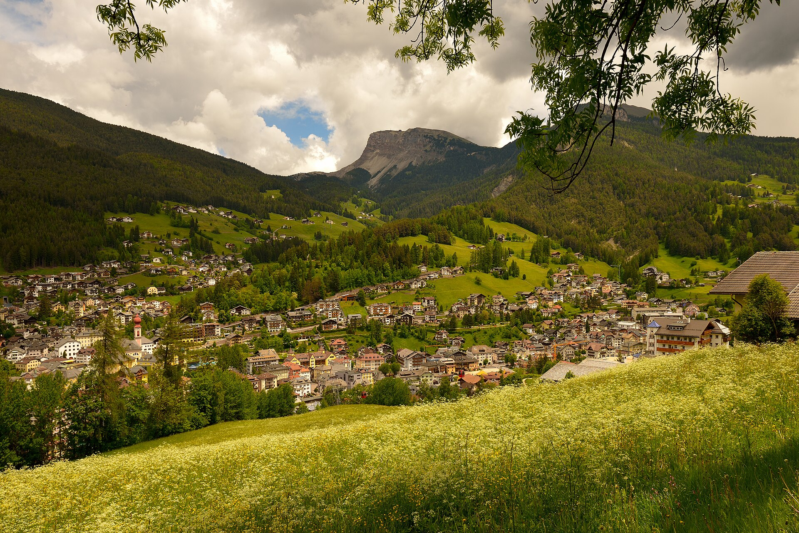
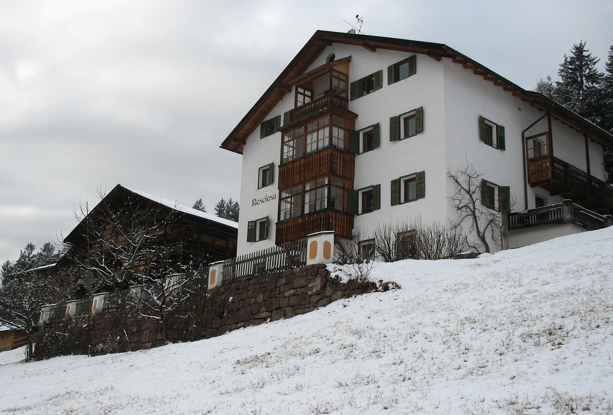

Val Gardena（拉定语 Gherdëina）是多洛米蒂核心区的 U 型冰川谷，25 公里长，依次排布三座小镇：Ortisei（1,236m）→ Santa Cristina（1,428m）→ Selva（1,563m）。每镇都有缆车上山，公交 350 贯穿全谷。以 Ortisei 为大本营，四条缆车路线覆盖 Seceda、Alpe di Siusi、Resciesa 与 Sella Ronda 全部核心景观。
缆车路线图
Mappa degli Impianti
看点路线
Il Percorso
- 1看懂三镇关系：Ortisei（缆车枢纽 + 最完整的镇中心）-> Santa Cristina（安静 + Col Raiser）-> Selva（最高 + Sella Ronda 起点）
- 2四条核心缆车：Furnes-Seceda / Ortisei-Alpe di Siusi / Resciesa / Ciampinoi
- 3Bus 350 贯穿全谷（约 20 分钟从 Ortisei 到 Selva）
- 4Sella Ronda：围绕 Sella 巨型岩体的环线（冬季滑雪 / 夏秋徒步 + 缆车接驳）
三镇与缆车指南
Val Gardena · 7 个关键信息

Ortisei（Urtijëi / St. Ulrich）
三镇中最大最完整（2026 年数据：居民 5,500、床位 6,000、年过夜 74 万）：步行街、木雕博物馆、超市与餐厅俱全。三条缆车从此出发（Seceda / Alpe di Siusi / Resciesa），是自由行最佳大本营。主街 Via Rezia 两侧全是木雕工坊与户外用品店。坐标：46.5752°N, 11.6685°E。
Santa Cristina
三镇中最安静（居民 2,000、床位 2,900、年过夜 32 万）：从 Ortisei 公交 350 约 10 分钟。有 Col Raiser 缆车（上到 Seceda 山脊另一端，2026 季至 10/31）和 Monte Pana 椅梯（9 月底已停）。适合喜欢安静、想住小 B&B 的旅行者。坐标：46.5582°N, 11.7202°E。
Selva di Val Gardena（Wolkenstein）
海拔最高的镇（居民 2,600、床位 8,000、年过夜 100 万--滑雪季是大头）：Ciampinoi 缆车（2026 季至 10/10）直达 Sella Ronda 环线。Dantercepies 已于 10/3 停运。冬天是滑雪村，10 月相对安静。坐标：46.5556°N, 11.7614°E。
Furnes-Seceda 缆车
Ortisei 镇中心步行 5 分钟即到缆车站。两段缆车（Ortisei → Furnes → Seceda），全程约 40 分钟。Val Gardena 最热门的缆车：旺季 08:30 起排队。详见 Seceda 专页。
Ortisei-Alpe di Siusi 缆车
从 Ortisei 镇南端出发的大型 gondola，约 20 分钟直达草甸。出站即是全景视角。详见 Alpe di Siusi 专页。

Resciesa 缆车
Ortisei 三条缆车中最安静的一条：从镇北端上到 Resciesa 高原，俯瞰 Val Gardena 全谷 + 进入 Puez-Odle 自然公园。人少、景好，适合想避开人群的半天。
Val Gardena Card（夏季通票）
夏季通票：所有开放缆车无限次乘坐。如果你计划连续 2 天以上每天坐缆车（如 Day 1 Seceda + Day 2 Alpe di Siusi），通票通常比买单次往返票更划算。住宿前台或缆车站有售；也可搭配 Guest Pass Mobilcard（公交免费）组合使用。

Sella Ronda 环线
以 Sella 山体（3,152m）为中心的环形路线，串联四条山谷（Val Gardena / Val Badia / Val di Fassa / Val Livinallongo）。冬季是世界最著名的滑雪环线（约 40km）；夏秋可徒步 + 缆车分段完成。从 Selva 的 Ciampinoi 或 Dantercepies 缆车出发最方便。
历史故事
Le Storie
壹三镇的"性格"
Val Gardena 三镇各有性格：Ortisei 是"客厅"（最热闹、最完整），Santa Cristina 是"书房"（安静、有 Col Raiser 缆车直达 Seceda 山脊），Selva 是"运动场"（海拔最高、直通 Sella Ronda）。
自由行的选择逻辑：无车者住 Ortisei（公交 + 缆车全步行可达）；有车且想安静住 S.Cristina 或 Selva；预算紧张可以考虑 Selva（通常比 Ortisei 便宜 10-20%）。
贰Bus 350：山谷的大动脉
Bus 350 是 Val Gardena 的交通命脉：从 Bolzano 火车站出发，经 Ortisei、Santa Cristina、Selva 到 Passo Gardena 山口。全程约 1 小时 15 分钟，约 30 分钟一班。
住在 Ortisei 的人用 Bus 350 做三件事：A) 到 Bolzano 换火车去其他城市；B) 到 Santa Cristina 或 Selva 走不同的徒步起点；C) 到 Passo Gardena 山口看 Sella 巨型岩体。用 Guest Pass Mobilcard 免费。
叁木雕的"冬季经济"
Val Gardena 的木雕传统不是"艺术爱好"，而是生存策略：每年 11 月到次年 4 月大雪封谷，山民出不了门，就在炉火边刻木。
17 世纪起，这些冬季手工品（圣像、玩具、工具）被商队翻山越岭卖到全欧洲。19 世纪 Val Gardena 圣像占领了半个天主教世界的教堂。今天的木雕工坊集中在 Ortisei 主街 Via Rezia--但雕刻的传承逻辑没变：冬天在工坊里慢慢刻，夏天在门口卖。
肆Sella Ronda 的环线哲学
Sella Ronda 是围绕 Sella 巨型岩体（3,152m）的环形路线，串联四条山谷（Val Gardena / Val Badia / Val di Fassa / Livinallongo）与四个山口（Gardena / Sella / Pordoi / Campolongo）。
冬天这是世界最著名的滑雪环线（约 40km，顺时针或逆时针方向约 5-6 小时）。夏秋则可以用缆车 + 徒步分段完成--很多人分两天走，每晚住不同山谷。从 Selva 的 Ciampinoi 缆车出发最方便。
伍Ortisei 的主街漫步
Via Rezia 是 Ortisei 的主街：从镇中心的 San Giacomo 教堂一路向东，两侧排开木雕工坊、户外用品店、咖啡馆与餐厅。傍晚 17:00-19:00 是 aperitivo 时段，本地人聚在门口喝一杯。
主街的关键位置：东端是 Seceda 缆车站（步行 5 分钟），西端是旅游信息中心，中间是 Museum Gherdëina（山谷博物馆）。走完主街 30 分钟，但逛街 + 咖啡 + 博物馆至少 2 小时。
陆Resciesa：被低估的观景台
Ortisei 有三条缆车，但多数游客只知道 Seceda 和 Alpe di Siusi--第三条 Resciesa 是本地人的秘密。从镇北端的缆车上到 2,280 米的 Resciesa 高原：俯瞰 Val Gardena 全谷 + 进入 Puez-Odle 自然公园。
Resciesa 顶站的徒步路线比 Seceda 更安静、更野生。如果 Seceda 排队人太多，来 Resciesa 是"Plan B"的惊喜。往返约 €20，不到 Seceda 的一半。
柒Guest Pass：免费交通的秘密
南蒂罗尔的 Guest Pass Mobilcard 是住宿附赠的公共交通通票：覆盖南蒂罗尔全部公交、火车与部分缆车。
很多人不知道的是：这张卡不只是山谷内有效，从 Bolzano 到 Verona / Venice / Milan 的火车也可以用它（如果是南蒂罗尔境内的 Trenitalia/Trenord 区段）。入住时一定向前台确认覆盖范围并索取实体卡。
另一个选择是 Val Gardena Card（夏季 3 天 / 6 天版）：所有缆车无限次乘坐。如果你计划连续多天坐缆车上山（Seceda + Alpe di Siusi + Col Raiser），通票比买单次往返票更划算。两种卡可以搭配：Guest Pass 管公交、Val Gardena Card 管缆车。
捌Col Raiser：另一条上山脊的路
Santa Cristina 的 Col Raiser 缆车（2,107m）是 Seceda 山脊的"后门"：从这里出发，沿 Trail 35 向西北走到 Seceda 顶站约 3 小时（反向 Seceda → Col Raiser 下坡更多）。
住在 Santa Cristina 的优势就在这里：早上坐 Col Raiser 上山脊、走到 Seceda 吃午餐、再走回来坐缆车下山。一天走完了 Seceda 的精华段。
玖山谷的食物
Val Gardena 的食物是南蒂罗尔混合菜：奥地利 + 意大利 + 拉定传统的三层叠加。必试：Canederli（面包丸子汤，德语 Knödel）、Speck（烟熏生火腿，比帕尔玛火腿更咸更有嚼劲）、Tirtlan（油炸薄饼夹菠菜或奶酪）、Kaiserschmarrn（撕碎煎饼配果酱）。
Ortisei 主街的几家传统餐厅都做这些菜。山上的 Rifugio 版本通常更粗犷--用铝碗端上来的 Canederli 配一勺黄油，是走了三小时山路后最好的奖励。
拾从 Bolzano 到 Ortisei 的 50 分钟
Bus 350 的 Bolzano → Ortisei 段是进山的前奏曲：从 Bolzano 火车站出发，沿 Eisack 河谷向北，然后在 Ponte Gardena 拐入 Val Gardena 山谷。公路沿河而上，两侧是葡萄园（Bolzano 是南蒂罗尔葡萄酒产区）。
50 分钟后，山峰开始变白、变高、变锐利。当你看到 Ortisei 镇中心的木雕招牌时，海拔已从 Bolzano 的 264 米升到了 1,236 米。这段公路本身就是一段"进入多洛米蒂"的仪式。
参观贴士
Consigli Pratici
- 以 Ortisei 为基地的理由：镇最完整 + 三条缆车步行可达 + 餐厅选择最多；Selva 偏滑雪、S.Cristina 偏安静
- Bus 350 谷内约 30 分钟一班（Ortisei ↔ Selva 约 20 分钟）；用住宿附赠的 Mobilcard 免费
- 自驾者：谷内公路畅通，但 Alpe di Siusi 内禁车（停 Compatsch）；Passo Gardena 山路弯多但铺装好
- 缆车票单次购买即可，不需要通票（除非计划连续多天滑雪）
- 10 月是山谷的"秋歇期"：缆车可能提前停运、部分餐厅关闭--出发前一周必须查 val-gardena.net
- 住宿选择：Ortisei 中心步行街附近最方便；B&B / 农庄（如 Roncadic、Surasass 区）安静且有早餐
顺路同游
Da Non Perdere